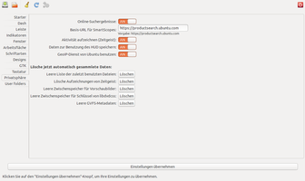

Unsettings
Dieser Artikel wurde für die folgenden Ubuntu-Versionen getestet:
Ubuntu 16.04 Xenial Xerus
Ubuntu 14.04 Trusty Tahr
Zum Verständnis dieses Artikels sind folgende Seiten hilfreich:
Unsettings  ist ein grafisches Konfigurationswerkzeug speziell für die Desktop-Oberfläche Unity. Mit Unsettings können nur die Einstellungen für den eigenen Benutzer geändert werden. Systemweite Änderungen, für die Administrator-Rechte benötigt werden, sind nicht möglich.
ist ein grafisches Konfigurationswerkzeug speziell für die Desktop-Oberfläche Unity. Mit Unsettings können nur die Einstellungen für den eigenen Benutzer geändert werden. Systemweite Änderungen, für die Administrator-Rechte benötigt werden, sind nicht möglich.
Die verschiedenen Einstellungsmöglichkeiten sind auf mehrere Reiter verteilt:
|  |
| Einstellungen zur Privatsphäre |
"Starter" - Aussehen und Verhalten des Startmenüs ändern
"Dash" - Einstellungen für das Suchlinsen-Fenster und die Standard-Suchlinsen
"Leiste" - Einstellungen für das Panel am oberen Bildschirmrand
"Indikatoren" - Einstellungen für einige Indikatoren
"Fenster" - HUD, Anzeige der Anwendungsmenüs und andere Einstellungen für Anwendungsfenster
"Arbeitsfläche" - Anzahl und Anzeige der Arbeitsflächen
"Schriftarten" - Standardschriftarten und Antialiasing
"Designs" - Designs ("Themes") auswählen. Es können nur bereits installierte Designs ausgewählt, aber keine neuen Designs installiert oder installierte Designs bearbeitet werden.
"GTK" - Menüs, Schaltflächen und andere Bedienelemente
"Tastatur" - Einstellungen zur Tastatur-Belegung, z.B. der Kombinationstaste (Compose)
"Privatsphäre" - Datenschutzrelevante Einstellungen. An dieser Stelle können auch einige automatisch gesammelten Daten gelöscht werden.
"User folders" - Standard-Verzeichnisse des Benutzers ändern
Installation¶
 Das Programm ist nicht in den offiziellen Paketquellen enthalten. Man muss daher ein "Personal Package Archiv" (PPA) [1] des Entwicklers nutzen.
Das Programm ist nicht in den offiziellen Paketquellen enthalten. Man muss daher ein "Personal Package Archiv" (PPA) [1] des Entwicklers nutzen.
PPA¶
Adresszeile zum Hinzufügen des PPAs:
ppa:diesch/testing
Hinweis!
Zusätzliche Fremdquellen können das System gefährden.
Ein PPA unterstützt nicht zwangsläufig alle Ubuntu-Versionen. Weitere Informationen sind der  PPA-Beschreibung des Eigentümers/Teams diesch zu entnehmen.
PPA-Beschreibung des Eigentümers/Teams diesch zu entnehmen.
Damit Pakete aus dem PPA genutzt werden können, müssen die Paketquellen neu eingelesen werden.
Nach dem Aktualisieren der Paketquellen lautet der Paketname zum Installieren [2] wie folgt:
unsettings (ppa)
 mit apturl
mit apturl
Paketliste zum Kopieren:
sudo apt-get install unsettings
sudo aptitude install unsettings
Fremdpaket¶
Alternativ kann man auch ein Fremdpaket im DEB-Format über die Projektseite herunterladen und manuell installieren [3]. Nachteil: das Programm wird nicht automatisch aktualisiert, wenn eine neue Version erscheint.
Hinweis!
Fremdpakete können das System gefährden.
Verwendung¶
Unsettings kann auf mehrere Arten gestartet werden [4]:
Über die Systemeinstellungen (im Abschnitt "Persönlich")
Aus der Programme-Suchlinse (z.B. mit den Suchbegriffen "unsettings" oder "konfiguration")
Auf der Kommandozeile mit dem Befehl:
unsettings
Geänderte Einstellungen werden erst mit einem Linksklick  auf die Schaltfläche "Einstellungen übernehmen" aktiv.
auf die Schaltfläche "Einstellungen übernehmen" aktiv.
Mit der "Speichern"-Schaltfläche oder dem Menü-Eintrag "Datei -> Speichern" können die aktuellen Einstellungen in einer Datei mit der Endung .unsettings gespeichert werden. Mit "Öffnen" können gespeicherte Einstellungen aus einer Datei wieder geladen werden. Damit kann man die eigenen Einstellungen bequem auf einen anderen Benutzer oder Rechner übertragen.

 Übersichtsartikel
Übersichtsartikel- Erstellt mit Inyoka
-
 2004 – 2017 ubuntuusers.de • Einige Rechte vorbehalten
2004 – 2017 ubuntuusers.de • Einige Rechte vorbehalten
Lizenz • Kontakt • Datenschutz • Impressum • Serverstatus -
Serverhousing gespendet von